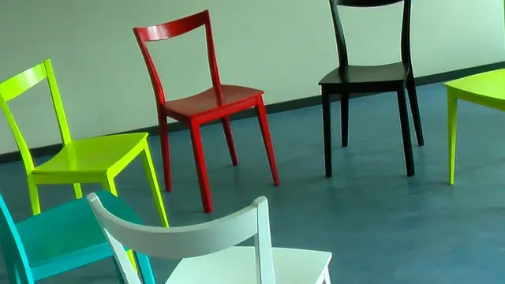

Open Space Technology — when the group knows more than the agenda does
A pre-set agenda assumes someone knows in advance what matters most. Open Space starts differently: the participants create the agenda on the day, around a central question. What surfaces is what the group actually cares about — not what the organiser thought they would care about.

What is Open Space Technology?
Open Space Technology is a facilitation format for large groups — typically 20 to 2,000 people — working on a complex challenge with no clear predetermined solution. Participants propose sessions, convene them, and document outcomes. The facilitator sets the conditions, then steps back.
It runs on four principles and one law:
- Whoever comes are the right people
- Whenever it starts is the right time
- Whatever happens is the only thing that could have
- When it's over, it's over
- The Law of Two Feet: If you are neither learning nor contributing, move somewhere you will
The Belgian community maintains resources at openspace-facilitation.eu.
When Open Space is not the right tool
- When leadership needs a specific, pre-determined outcome — Open Space surfaces what the group cares about, not what leadership wants to hear
- When leadership is not willing to act on what emerges — running Open Space and ignoring the output destroys trust faster than not running it
- When the group is fewer than 15 people — smaller formats work better
- When the culture punishes honesty — people will not raise real issues if they expect consequences
How we facilitate Open Space
Open Space looks simple. It is not easy. The facilitator's job is to create conditions where self-organization works — and to intervene precisely when it starts to break down.
- We help you write the central question — the one that opens the space and focuses energy
- We design the physical or virtual environment to support free movement and documentation
- We open the space and hold it — visible but not controlling
- We ensure every session is documented before the day ends
- We help the group synthesize what emerged into clear next steps
Open Space in practice
Post-merger: honest conversations across cultures
Two organisations merged. Tensions were high and collaboration was slow. An Open Space event created neutral ground where honest conversations happened. New working agreements emerged — not from a template, but from the people who had to live with them.
Strategic priorities: 150 leaders, two days
A multinational facing market disruption used Open Space to engage 150 leaders across departments. In two days, they identified the critical priorities and formed cross-functional teams to act on them.
Considering Open Space?
Tell us your situation. We'll tell you honestly whether Open Space fits — or suggest what does.
Ready to plan an event? See formats, the central question, and what you get.
More from the Belgian community: openspace-facilitation.eu